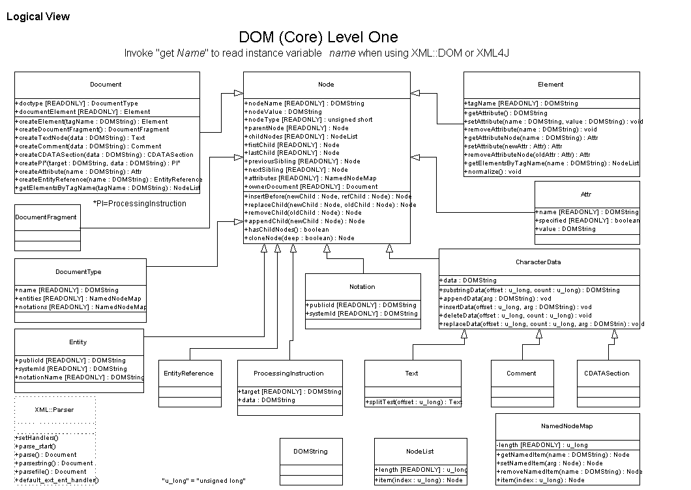

DOM (Core Level 1) Hierarchy Diagram
The following diagram shows the DOM (Core Level 1) API. It does not show
all the Node types available in XML::DOM, but should be useful nonetheless.
Thanks to Vance Christiaanse <vance@textwise.com> for creating
the diagram.
